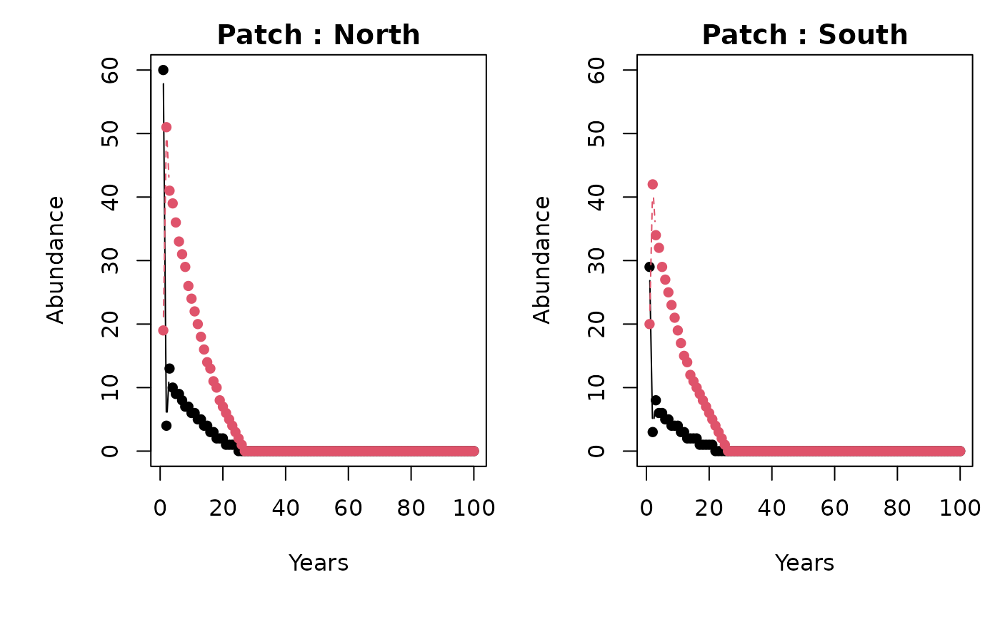
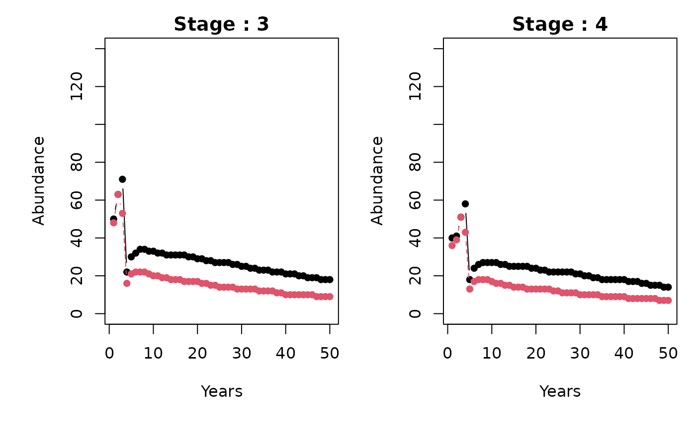
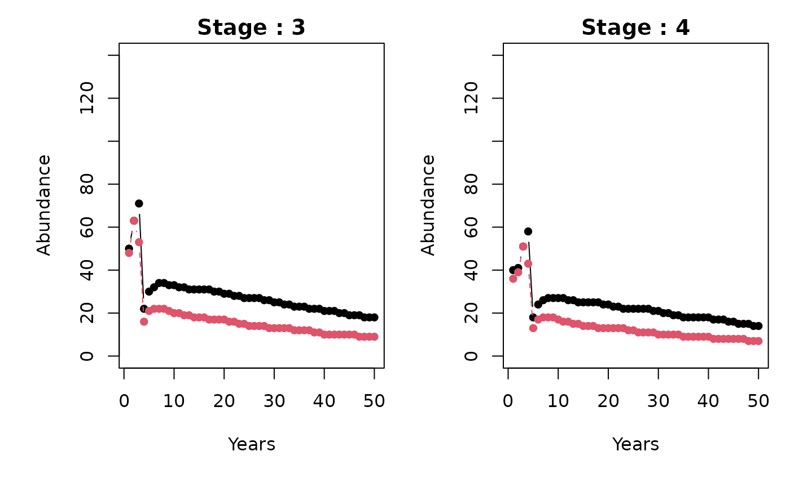

Getting started with the metapopbio package
Caleb A. Aldridge
2025-07-24
Source:vignettes/getting-started.Rmd
getting-started.Rmd
# devtools::install_github("AldridgeCaleb/meta-pop-bio")
library(metapopbio)
#> Loading required package: openxlsx
#> Loading required package: zeallotAbout
The metapopbio
package is inspired by and complements the functionalities of the popbio
package. Users can construct and analyze projection matrix models for
metapopulations classified by age or stage and located in distinct
patches.
The functionality to date is largely based on Hunter and Caswell (2005) to construct and analyze spatial matrix population models using the vec-permutation matrix. This model extends the Leslie matrix (Leslie 1945) to include dispersal rates between patches. An analogous approach was taken by Lebreton (1996) and called the “renewal equation approach.”
Current plans include support for classic metapopulation models of Gotelli (1991; 2008) and others, i.e., , , , and , and hyperstate matrix models (Roth and Caswell 2016). Additionally, Hanski’s (1994) incidence function $J_{i}=\frac{1}{1+\Bigl(1+\bigl[\frac{y'}{S_{i}}\bigr]^2\Bigr)\frac{e}{A_{i}^x}}$ and a metapopulation version of the Susceptible–Infected–Recovered model (SIR model), also referred to as a patch model, are also being considered. Other suggestions can be submitted in email to caleb.a.aldridge@gmail.com or as an issue on the package’s GitHub repository (https://github.com/AldridgeCaleb/meta-pop-bio/issues).
Examples
The following two examples come from Hunter and Caswell (2005) using peregrine falcon (Falco peregrinus) data from Wootton and Bell (1992) and black-headed gull (Larus ridibundus) data from Lebreton (1996).
The peregrine falcon
1. Patches, stages, and grouping
First, we define the number of patches (discrete locations) and stages (age, class, or size). In this example there are two “patches”, Northern California and Southern California, and two life-stages, juvenile and adult. We also group or will project stages within patches1.
n_patches <- 2
n_stages <- 2
group_by <- "patches"2. Construct vec-permutation matrix
Next, we construct the vec-permutation matrix. Essentially, the
vec-permutation matrix helps us relate demographic and dispersal
parameters so that populations in patches are projected considering
births, immigration, deaths, and emigration (BIDE) or recruitment,
immigration, survival, and emigration (RISE). The
metapopbio::vec.perm function helps us to easily construct
a vec-permutation matrix.
(P <-
metapopbio::vec.perm(n_stages = n_stages,
n_patches = n_patches,
group_by = group_by))
#> [,1] [,2] [,3] [,4]
#> [1,] 1 0 0 0
#> [2,] 0 0 1 0
#> [3,] 0 1 0 0
#> [4,] 0 0 0 13. Demographic parameters for each patch
We now specify transition probabilities from one stage to the next (survival s and recruitment r). Numbers in object names indicate patch then stage. Only adults are assumed to reproduce.
Northern first.
# Northern
f11 <- 0.00
f12 <- 0.2556
s11 <- 0.72
s12 <- 0.77Now Southern.
# Southern
f21 <- 0.00
f22 <- 0.1908
s21 <- 0.72
s22 <- 0.774a. Structure demographic parameters
Now we will construct demographic (Leslise-style) matrices for each of the patches. This is just placing the demographic parameters from above into an ordered matrices for analysis and projecting.
# Northern
(B1x <-
matrix(c(f11, f12, s11, s12),
nrow = n_stages,
ncol = n_stages,
byrow = TRUE))
#> [,1] [,2]
#> [1,] 0.00 0.2556
#> [2,] 0.72 0.7700
# Southern
(B2x <-
matrix(c(f21, f22, s21, s22),
nrow = n_stages,
ncol = n_stages,
byrow = TRUE))
#> [,1] [,2]
#> [1,] 0.00 0.1908
#> [2,] 0.72 0.77004b. Construct block diagonal matrix
Along with the vec-permutation matrix, spatial matrix population
models use a matrix of matrices for analysis and projection of
population demographics and movement. We accomplish this using the
metapopbio::blk.diag function.
5. Structure movement parameters
Similar to the above, we will construct movement or dispersal matrices for each of the stages. This is just placing movement parameters into an ordered matrices for analysis and projecting. We assume that only juveniles disperse, therefore an identity matrix is specified for adult movement.
# Juveniles
dx1 <- 0.27
dx2 <- 1 - dx1
(Mx1 <- matrix(c(dx2, dx1, dx1, dx2),
nrow = n_patches,
ncol = n_patches,
byrow = TRUE))
#> [,1] [,2]
#> [1,] 0.73 0.27
#> [2,] 0.27 0.73
# Adults
(Mx2 <- diag(nrow = n_patches))
#> [,1] [,2]
#> [1,] 1 0
#> [2,] 0 1
# Block diagonal matrix
(MM <- metapopbio::blk.diag(list(Mx1, Mx2)))
#> [,1] [,2] [,3] [,4]
#> [1,] 0.73 0.27 0 0
#> [2,] 0.27 0.73 0 0
#> [3,] 0.00 0.00 1 0
#> [4,] 0.00 0.00 0 16. Construct projection matrix
Now we can use the vec-permutation matrix and block diagonal matrices
to construct a population projection matrix. This is accomplished
through matrix multiplication. The order of matrices is very important
(see Hunter and Caswell 2005 or function documentation for more detail),
but the metapopbio::spmm.project.matrix function makes it
much more convenient and reduces the probability of calculation errors.
All that’s needed is to specify the grouping (structure) for the
projection (stages within patches here) and the order type between
demographic and movement / dispersal processes (here, dispersal then
demographics), then supply the matrices we have constructed (P, BB, and
MM).
group_by <- "patches"
lh_order <- "move"
(A <-
metapopbio::spmm.project.matrix(
P = P,
BB = BB,
MM = MM,
group_by = group_by,
lh_order = lh_order
))
#> [,1] [,2] [,3] [,4]
#> [1,] 0.0000 0.2556 0.0000 0.0000
#> [2,] 0.5256 0.7700 0.1944 0.0000
#> [3,] 0.0000 0.0000 0.0000 0.1908
#> [4,] 0.1944 0.0000 0.5256 0.77007. Project
Now we can project populations into future time steps. First, we have to indicate the starting, initial, or current sizes of each stage by patch, or vice versa if grouping by stages. An added step is to comment on the vector which ensures projection calculations are correct. The numbers for n below were retrieved from Table 1 of Wootton and Bell (1992).
n <- c(
60, 19, # Northern patch adults then juveniles
29, 20 # Southern patch adults then juveniles
)
comment(n) <- "patches" # vector attr for group_by Now we indicate the number of time steps we would like to project.
n_timesteps <- 100And, finally we can project stages within patches using the
metapopbio::spmm.project function.
head(
projs <-
metapopbio::spmm.project(
n = n,
A = A,
n_timesteps = n_timesteps,
n_stages = n_stages,
n_patches = n_patches
)
)
#> [1] "Deterministic spatial matrix model projections for patches structured population vector and movement then demography A projection matrix. The arg mod_move is currently ignored; please modify manually."
#> 1 2 3 4 5 6 7 8 9 10 11 12 13 14 15 16 17 18 19 20 21 22 23 24 25
#> [1,] 60 4 13 10 9 9 8 7 7 6 6 5 5 4 4 3 3 2 2 2 1 1 1 1 0
#> [2,] 19 51 41 39 36 33 31 29 26 24 22 20 18 16 14 13 11 10 8 7 6 5 4 3 2
#> [3,] 29 3 8 6 6 5 5 4 4 4 3 3 2 2 2 2 1 1 1 1 1 0 0 0 0
#> [4,] 20 42 34 32 29 27 25 23 21 19 17 15 14 12 11 10 9 8 7 6 5 4 3 2 1
#> 26 27 28 29 30 31 32 33 34 35 36 37 38 39 40 41 42 43 44 45 46 47 48 49 50
#> [1,] 0 0 0 0 0 0 0 0 0 0 0 0 0 0 0 0 0 0 0 0 0 0 0 0 0
#> [2,] 1 0 0 0 0 0 0 0 0 0 0 0 0 0 0 0 0 0 0 0 0 0 0 0 0
#> [3,] 0 0 0 0 0 0 0 0 0 0 0 0 0 0 0 0 0 0 0 0 0 0 0 0 0
#> [4,] 0 0 0 0 0 0 0 0 0 0 0 0 0 0 0 0 0 0 0 0 0 0 0 0 0
#> 51 52 53 54 55 56 57 58 59 60 61 62 63 64 65 66 67 68 69 70 71 72 73 74 75
#> [1,] 0 0 0 0 0 0 0 0 0 0 0 0 0 0 0 0 0 0 0 0 0 0 0 0 0
#> [2,] 0 0 0 0 0 0 0 0 0 0 0 0 0 0 0 0 0 0 0 0 0 0 0 0 0
#> [3,] 0 0 0 0 0 0 0 0 0 0 0 0 0 0 0 0 0 0 0 0 0 0 0 0 0
#> [4,] 0 0 0 0 0 0 0 0 0 0 0 0 0 0 0 0 0 0 0 0 0 0 0 0 0
#> 76 77 78 79 80 81 82 83 84 85 86 87 88 89 90 91 92 93 94 95 96 97 98 99
#> [1,] 0 0 0 0 0 0 0 0 0 0 0 0 0 0 0 0 0 0 0 0 0 0 0 0
#> [2,] 0 0 0 0 0 0 0 0 0 0 0 0 0 0 0 0 0 0 0 0 0 0 0 0
#> [3,] 0 0 0 0 0 0 0 0 0 0 0 0 0 0 0 0 0 0 0 0 0 0 0 0
#> [4,] 0 0 0 0 0 0 0 0 0 0 0 0 0 0 0 0 0 0 0 0 0 0 0 0
#> 100
#> [1,] 0
#> [2,] 0
#> [3,] 0
#> [4,] 08. Plotting
stage_names <- c("Juv.", "Adults")
patch_names <- c("North", "South")
metapopbio::spmm.plot(
projections = projs,
ylabs = "Abundance",
xlabs = "Years",
stage_names = stage_names,
patch_names = patch_names
)
9. Sensitivity and elasticity analyses
metapopbio::spmm.project.matrix.sens(A)
#> [,1] [,2] [,3] [,4]
#> [1,] 0.10622465 0.3920347 0.06232833 0.3081536
#> [2,] 0.15665059 0.5781376 0.09191624 0.4544372
#> [3,] 0.08349644 0.3081536 0.04899234 0.2422199
#> [4,] 0.09191624 0.3392278 0.05393274 0.2666454
metapopbio::spmm.eig.lambda(A)
#> $eig
#> eigen() decomposition
#> $values
#> [1] 0.94332217 0.85335264 -0.17332217 -0.08335264
#>
#> $vectors
#> [,1] [,2] [,3] [,4]
#> [1,] 0.2068106 -0.1472176 -0.6920115 0.5741311
#> [2,] 0.7632592 -0.4915044 0.4692525 -0.1872275
#> [3,] 0.1213481 0.1872911 -0.4060444 -0.7304128
#> [4,] 0.5999495 0.8376589 0.3688496 0.3190872
#>
#>
#> $lambda
#> [1] 0.9433222
#>
#> $v
#> [1] 0.2068106 0.7632592 0.1213481 0.5999495
#>
#> $eig_t
#> eigen() decomposition
#> $values
#> [1] 0.94332217 0.85335264 -0.17332217 -0.08335264
#>
#> $vectors
#> [,1] [,2] [,3] [,4]
#> [1,] -0.4692525 -0.1872275 -0.7632592 -0.4915044
#> [2,] -0.6920115 -0.5741311 0.2068106 0.1472176
#> [3,] -0.3688496 0.3190872 -0.5999495 0.8376589
#> [4,] -0.4060444 0.7304128 0.1213481 -0.1872911
#>
#>
#> $w
#> [1] -0.4692525 -0.6920115 -0.3688496 -0.4060444
metapopbio::spmm.demo.sens(BB, A, P, MM)
#> [,1] [,2] [,3] [,4]
#> [1,] 0.09437264 0.3920347 0.07418034 0.3081536
#> [2,] 0.13917231 0.5781376 0.10939451 0.4544372
#> [3,] 0.07418034 0.3081536 0.05830845 0.2422199
#> [4,] 0.08166069 0.3392278 0.06418828 0.2666454
metapopbio::spmm.demo.elas(BB, A, P, MM)
#> [,1] [,2] [,3] [,4]
#> [1,] 0.0000000 0.1062246 0.00000000 0.00000000
#> [2,] 0.1062246 0.4719130 0.00000000 0.00000000
#> [3,] 0.0000000 0.0000000 0.00000000 0.04899234
#> [4,] 0.0000000 0.0000000 0.04899234 0.21765307
metapopbio::spmm.move.sens(MM, A, P, BB)
#> [,1] [,2] [,3] [,4]
#> [1,] 0.11278842 0.06617969 0.4162591 0.3271948
#> [2,] 0.06617969 0.03883157 0.2442440 0.1919847
#> [3,] 0.14777197 0.08670662 0.5453700 0.4286807
#> [4,] 0.08670662 0.05087594 0.3200011 0.2515325
metapopbio::spmm.move.elas(MM, A, P, BB)
#> [,1] [,2] [,3] [,4]
#> [1,] 0.08728253 0.01894211 0.0000000 0.0000000
#> [2,] 0.01894211 0.03005023 0.0000000 0.0000000
#> [3,] 0.00000000 0.00000000 0.5781376 0.0000000
#> [4,] 0.00000000 0.00000000 0.0000000 0.2666454The black-headed gull
Fewer comments are provided for this example but it should be noted that the grouping (structure of n) is by stages in this example. The life-cycle order remains the same, i.e., movement then demographics (only juveniles assumed to disperse).
1. Patches, stages, and grouping
First, we define the number of patches and stages (age, class, or size). In this example there are two “patches” and five life-stages. We also group or will project patches within stages.
n_patches <- 2
n_stages <- 5
group_by <- "stages"2. Construct vec-permutation matrix
Next, we construct the vec-permutation matrix.
(P <-
metapopbio::vec.perm(n_stages = n_stages,
n_patches = n_patches,
group_by = group_by))
#> [,1] [,2] [,3] [,4] [,5] [,6] [,7] [,8] [,9] [,10]
#> [1,] 1 0 0 0 0 0 0 0 0 0
#> [2,] 0 0 0 0 0 1 0 0 0 0
#> [3,] 0 1 0 0 0 0 0 0 0 0
#> [4,] 0 0 0 0 0 0 1 0 0 0
#> [5,] 0 0 1 0 0 0 0 0 0 0
#> [6,] 0 0 0 0 0 0 0 1 0 0
#> [7,] 0 0 0 1 0 0 0 0 0 0
#> [8,] 0 0 0 0 0 0 0 0 1 0
#> [9,] 0 0 0 0 1 0 0 0 0 0
#> [10,] 0 0 0 0 0 0 0 0 0 13. Define and structure Demographic parameters
We now specify transition probabilities from one stage to the next. Only adults are assumed to reproduce and differential among adult stages. We will specify demographic parameters and structure the (Leslie-style) matrices for each patch simultaneously.
B1x <- matrix(c(0.000, 0.096, 0.160, 0.224, 0.320,
0.800, 0.000, 0.000, 0.000, 0.000,
0.000, 0.820, 0.000, 0.000, 0.000,
0.000, 0.000, 0.820, 0.000, 0.000,
0.000, 0.000, 0.000, 0.820, 0.820),
nrow = n_stages, ncol = n_stages, byrow = TRUE)
B2x <- matrix(c(0.000, 0.100, 0.160, 0.200, 0.200,
0.800, 0.000, 0.000, 0.000, 0.000,
0.000, 0.820, 0.000, 0.000, 0.000,
0.000, 0.000, 0.820, 0.000, 0.000,
0.000, 0.000, 0.000, 0.820, 0.820),
nrow = n_stages, ncol = n_stages, byrow = TRUE)4. Construct block diagonal matrix
Along with the vec-permutation matrix, spatial matrix population
models use a matrix of matrices for analysis and projection of
population demographics and movement. We accomplish this using the
metapopbio::blk.diag function.
(BB <- metapopbio::blk.diag(list(B1x, B2x)))
#> [,1] [,2] [,3] [,4] [,5] [,6] [,7] [,8] [,9] [,10]
#> [1,] 0.0 0.096 0.16 0.224 0.32 0.0 0.00 0.00 0.00 0.00
#> [2,] 0.8 0.000 0.00 0.000 0.00 0.0 0.00 0.00 0.00 0.00
#> [3,] 0.0 0.820 0.00 0.000 0.00 0.0 0.00 0.00 0.00 0.00
#> [4,] 0.0 0.000 0.82 0.000 0.00 0.0 0.00 0.00 0.00 0.00
#> [5,] 0.0 0.000 0.00 0.820 0.82 0.0 0.00 0.00 0.00 0.00
#> [6,] 0.0 0.000 0.00 0.000 0.00 0.0 0.10 0.16 0.20 0.20
#> [7,] 0.0 0.000 0.00 0.000 0.00 0.8 0.00 0.00 0.00 0.00
#> [8,] 0.0 0.000 0.00 0.000 0.00 0.0 0.82 0.00 0.00 0.00
#> [9,] 0.0 0.000 0.00 0.000 0.00 0.0 0.00 0.82 0.00 0.00
#> [10,] 0.0 0.000 0.00 0.000 0.00 0.0 0.00 0.00 0.82 0.825. Structure movement parameters
Similar to the above, we will construct movement or dispersal matrices for each of the stages. This is just placing movement parameters into an ordered matrices for analysis and projecting. We assume that only juveniles disperse, therefore an identity matrix is specified for adult movement.
# Juveniles
Mx1 <- matrix(c(0.75, 0.375, 0.25, 0.625),
nrow = n_patches, ncol = n_patches, byrow = TRUE)
# Adults
Mx5 <- Mx4 <- Mx3 <- Mx2 <-
diag(nrow = n_patches)
# Block diagonal matrix
(MM <- metapopbio::blk.diag(list(Mx1, Mx2, Mx3, Mx4, Mx5)))
#> [,1] [,2] [,3] [,4] [,5] [,6] [,7] [,8] [,9] [,10]
#> [1,] 0.75 0.375 0 0 0 0 0 0 0 0
#> [2,] 0.25 0.625 0 0 0 0 0 0 0 0
#> [3,] 0.00 0.000 1 0 0 0 0 0 0 0
#> [4,] 0.00 0.000 0 1 0 0 0 0 0 0
#> [5,] 0.00 0.000 0 0 1 0 0 0 0 0
#> [6,] 0.00 0.000 0 0 0 1 0 0 0 0
#> [7,] 0.00 0.000 0 0 0 0 1 0 0 0
#> [8,] 0.00 0.000 0 0 0 0 0 1 0 0
#> [9,] 0.00 0.000 0 0 0 0 0 0 1 0
#> [10,] 0.00 0.000 0 0 0 0 0 0 0 16. Construct projection matrix
Now we can use the vec-permutation matrix and block diagonal matrices
to construct a population projection matrix. This is accomplished
through matrix multiplication. The order of matrices is very important
(see Hunter and Caswell 2005 or function documentation for more detail),
but the metapopbio::spmm.project.matrix function makes it
much more convenient and reduces the probability of calculation errors.
All that’s needed is to specify the grouping (structure) for the
projection (stages within patches here) and the order type between
demographic and movement / dispersal processes (here, dispersal then
demographics), then supply the matrices we have constructed (P, BB, and
MM).
group_by <- "stages"
lh_order <- "move"
(A <-
metapopbio::spmm.project.matrix(
P = P,
BB = BB,
MM = MM,
group_by = group_by,
lh_order = lh_order
))
#> [,1] [,2] [,3] [,4] [,5] [,6] [,7] [,8] [,9] [,10]
#> [1,] 0.0 0.0 0.096 0.00 0.16 0.00 0.224 0.00 0.32 0.00
#> [2,] 0.0 0.0 0.000 0.10 0.00 0.16 0.000 0.20 0.00 0.20
#> [3,] 0.6 0.3 0.000 0.00 0.00 0.00 0.000 0.00 0.00 0.00
#> [4,] 0.2 0.5 0.000 0.00 0.00 0.00 0.000 0.00 0.00 0.00
#> [5,] 0.0 0.0 0.820 0.00 0.00 0.00 0.000 0.00 0.00 0.00
#> [6,] 0.0 0.0 0.000 0.82 0.00 0.00 0.000 0.00 0.00 0.00
#> [7,] 0.0 0.0 0.000 0.00 0.82 0.00 0.000 0.00 0.00 0.00
#> [8,] 0.0 0.0 0.000 0.00 0.00 0.82 0.000 0.00 0.00 0.00
#> [9,] 0.0 0.0 0.000 0.00 0.00 0.00 0.820 0.00 0.82 0.00
#> [10,] 0.0 0.0 0.000 0.00 0.00 0.00 0.000 0.82 0.00 0.827. Project
Now we can project populations into future time steps. First, we have to indicate the starting, initial, or current sizes of each patch by stage. I have made these up as they were not avilable in Hunter and Morris (2005) nor Lebreton (1996). An added step is to comment on the vector which ensures projection calculations are correct.
n <- c(
100, 90, # stage 1
78, 77, # stage 2
50, 48, # stage 3
40, 36, # stage 4
29, 28 # stage 5
)
comment(n) <- "stages" # vector attr for group_by Now we indicate the number of time steps we would like to project.
n_timesteps <- 50And, finally we can project stages within patches using the
metapopbio::spmm.project function.
head(
projs <-
metapopbio::spmm.project(
n = n,
A = A,
n_timesteps = n_timesteps,
n_stages = n_stages,
n_patches = n_patches
)
)
#> [1] "Deterministic spatial matrix model projections for stages structured population vector and movement then demography A projection matrix. The arg mod_move is currently ignored; please modify manually."
#> 1 2 3 4 5 6 7 8 9 10 11 12 13 14 15 16 17 18 19 20 21 22 23 24
#> [1,] 100 33 45 50 53 55 54 54 53 53 53 53 53 52 52 51 51 50 50 49 49 48 47 47
#> [2,] 90 28 34 35 34 32 31 30 29 28 27 26 25 24 23 23 22 22 21 21 20 19 19 19
#> [3,] 78 87 28 37 40 42 42 41 41 40 40 39 39 39 38 38 37 37 36 36 35 35 34 33
#> [4,] 77 65 20 26 27 27 27 26 25 25 24 24 23 23 22 21 21 21 21 20 20 19 19 18
#> [5,] 50 63 71 22 30 32 34 34 33 33 32 32 31 31 31 31 31 30 30 29 29 28 28 27
#> [6,] 48 63 53 16 21 22 22 22 21 20 20 19 19 18 18 18 17 17 17 17 16 16 15 15
#> 25 26 27 28 29 30 31 32 33 34 35 36 37 38 39 40 41 42 43 44 45 46 47 48 49
#> [1,] 46 45 45 44 44 43 43 42 41 41 40 39 38 37 37 37 36 36 35 35 34 33 33 32 31
#> [2,] 18 18 17 17 16 16 16 15 15 15 14 14 14 13 13 13 12 12 12 12 12 11 11 11 11
#> [3,] 33 33 32 32 31 31 30 30 29 29 29 28 27 27 26 26 26 25 25 24 24 24 23 23 22
#> [4,] 18 18 18 17 17 16 16 16 15 15 15 15 14 14 13 13 13 13 13 13 13 12 12 12 11
#> [5,] 27 27 27 26 26 25 25 24 24 23 23 23 22 22 22 21 21 21 20 20 19 19 19 18 18
#> [6,] 14 14 14 14 13 13 13 13 13 12 12 12 12 11 11 10 10 10 10 10 10 10 9 9 9
#> 50
#> [1,] 31
#> [2,] 10
#> [3,] 21
#> [4,] 11
#> [5,] 18
#> [6,] 98. Plotting
stage_names <- as.character(1:5)
patch_names <- c("A", "B")
metapopbio::spmm.plot(
projections = projs,
ylabs = "Abundance",
xlabs = "Years",
stage_names = stage_names,
patch_names = patch_names
) 

9. Sensitivity and elasticity analyses
metapopbio::spmm.project.matrix.sens(A)
#> Warning in metapopbio::spmm.project.matrix.sens(A): Matrix A is poorly
#> conditioned; eigenvalues may be unstable.
#> [,1] [,2] [,3] [,4] [,5] [,6]
#> [1,] 0.09755745 0.03894678 0.07042373 0.03909882 0.05791623 0.03215474
#> [2,] 0.08124494 0.03243452 0.05864823 0.03256113 0.04823210 0.02677817
#> [3,] 0.13514559 0.05395267 0.09755745 0.05416329 0.08023091 0.04454371
#> [4,] 0.08092901 0.03230839 0.05842017 0.03243452 0.04804455 0.02667404
#> [5,] 0.15291005 0.06104458 0.11038107 0.06128289 0.09077701 0.05039884
#> [6,] 0.08849839 0.03533023 0.06388427 0.03546815 0.05253820 0.02916889
#> [7,] 0.16689665 0.06662830 0.12047757 0.06688840 0.09908034 0.05500879
#> [8,] 0.09175768 0.03663140 0.06623705 0.03677440 0.05447313 0.03024314
#> [9,] 0.17628954 0.07037812 0.12725801 0.07065286 0.10465655 0.05810467
#> [10,] 0.09175768 0.03663140 0.06623705 0.03677440 0.05447313 0.03024314
#> [,7] [,8] [,9] [,10]
#> [1,] 0.04763011 0.02644394 0.2205523 0.1224493
#> [2,] 0.03966592 0.02202227 0.1836739 0.1019746
#> [3,] 0.06598163 0.03663259 0.3055294 0.1696280
#> [4,] 0.03951167 0.02193664 0.1829597 0.1015781
#> [5,] 0.07465471 0.04144783 0.3456903 0.1919251
#> [6,] 0.04320724 0.02398839 0.2000721 0.1110788
#> [7,] 0.08148333 0.04523904 0.3773104 0.2094804
#> [8,] 0.04479851 0.02487186 0.2074405 0.1151697
#> [9,] 0.08606919 0.04778508 0.3985453 0.2212699
#> [10,] 0.04479851 0.02487186 0.2074405 0.1151697
metapopbio::spmm.eig.lambda(A)
#> Warning in metapopbio::spmm.eig.lambda(A): Matrix A is poorly conditioned;
#> eigenvalues may be unstable.
#> $eig
#> eigen() decomposition
#> $values
#> [1] 9.970859e-01+0.0000000i 8.919222e-01+0.0000000i 2.182849e-01+0.4025870i
#> [4] 2.182849e-01-0.4025870i -3.024940e-01+0.2461757i -3.024940e-01-0.2461757i
#> [7] 6.112978e-02+0.2358721i 6.112978e-02-0.2358721i -2.028494e-01+0.0000000i
#> [10] 1.791285e-15+0.0000000i
#>
#> $vectors
#> [,1] [,2] [,3]
#> [1,] -0.32790653+0i -0.18212972+0i 0.116056424-0.07487059i
#> [2,] -0.13090649+0i 0.22690373+0i 0.006076633+0.01670070i
#> [3,] -0.23670566+0i -0.04619989+0i -0.002241819-0.17870968i
#> [4,] -0.13141752+0i 0.08635946+0i 0.014606045-0.05728283i
#> [5,] -0.19466592+0i -0.04247446+0i -0.283215006-0.14899452i
#> [6,] -0.10807732+0i 0.07939566+0i -0.077701404-0.07188011i
#> [7,] -0.16009259+0i -0.03904943+0i -0.476243342+0.31863815i
#> [8,] -0.08888242+0i 0.07299341+0i -0.179460166+0.06096001i
#> [9,] -0.74131229+0i -0.44521053+0i 0.649010676+0.00000000i
#> [10,] -0.41157200+0i 0.83221273+0i 0.207333032+0.05564490i
#> [,4] [,5]
#> [1,] 0.116056424+0.07487059i 0.05022988+0.0927743125i
#> [2,] 0.006076633-0.01670070i -0.00445866-0.0004872395i
#> [3,] -0.002241819+0.17870968i 0.03257850-0.1570225501i
#> [4,] 0.014606045+0.05728283i 0.01409087-0.0490667965i
#> [5,] -0.283215006+0.14899452i -0.26151751+0.2128281605i
#> [6,] -0.077701404+0.07188011i -0.08809695+0.0613150917i
#> [7,] -0.476243342-0.31863815i 0.70892098+0.0000000000i
#> [8,] -0.179460166-0.06096001i 0.22503737+0.0169271029i
#> [9,] 0.649010676+0.00000000i -0.49411266-0.1083645061i
#> [10,] 0.207333032-0.05564490i -0.15426192-0.0461969101i
#> [,6] [,7]
#> [1,] 0.05022988-0.0927743125i 0.014698188+0.010441279i
#> [2,] -0.00445866+0.0004872395i -0.031370628-0.018391363i
#> [3,] 0.03257850+0.1570225501i 0.002359263+0.003122440i
#> [4,] 0.01409087+0.0490667965i -0.041358939+0.043317596i
#> [5,] -0.26151751-0.2128281605i 0.012163687-0.005049481i
#> [6,] -0.08809695-0.0613150917i 0.106195671+0.171304886i
#> [7,] 0.70892098+0.0000000000i -0.006180033-0.043888220i
#> [8,] 0.22503737-0.0169271029i 0.647709984-0.201321292i
#> [9,] -0.49411266+0.1083645061i -0.007352067+0.045138406i
#> [10,] -0.15426192+0.0461969101i -0.699885399+0.000000000i
#> [,8] [,9] [,10]
#> [1,] 0.014698188-0.010441279i 0.010988584+0i -5.224894e-16+0i
#> [2,] -0.031370628+0.018391363i -0.023369498+0i -3.630818e-17+0i
#> [3,] 0.002359263-0.003122440i 0.002059156+0i 1.699276e-16+0i
#> [4,] -0.041358939-0.043317596i 0.046768853+0i 1.250305e-16+0i
#> [5,] 0.012163687+0.005049481i -0.008323952+0i -2.213028e-17+0i
#> [6,] 0.106195671-0.171304886i -0.189058814+0i -1.216778e-15+0i
#> [7,] -0.006180033+0.043888220i 0.033648815+0i 1.660406e-15+0i
#> [8,] 0.647709984+0.201321292i 0.764252980+0i -7.071068e-01+0i
#> [9,] -0.007352067-0.045138406i -0.026975652+0i -1.566664e-15+0i
#> [10,] -0.699885399+0.000000000i -0.612687917+0i 7.071068e-01+0i
#>
#>
#> $lambda
#> [1] 0.9970859
#>
#> $v
#> [1] -0.32790653 -0.13090649 -0.23670566 -0.13141752 -0.19466592 -0.10807732
#> [7] -0.16009259 -0.08888242 -0.74131229 -0.41157200
#>
#> $eig_t
#> eigen() decomposition
#> $values
#> [1] 9.970859e-01+0.0000000i 8.919222e-01+0.0000000i 2.182849e-01+0.4025870i
#> [4] 2.182849e-01-0.4025870i -3.024940e-01+0.2461757i -3.024940e-01-0.2461757i
#> [7] 6.112978e-02+0.2358721i 6.112978e-02-0.2358721i -2.028494e-01+0.0000000i
#> [10] 1.718711e-15+0.0000000i
#>
#> $vectors
#> [,1] [,2] [,3]
#> [1,] 0.2536597+0i 0.05633004+0i 0.62139103+0.00000000i
#> [2,] 0.2112455+0i -0.15794294+0i 0.29776448+0.07991527i
#> [3,] 0.3513929+0i 0.22206487+0i 0.25523002+0.40674126i
#> [4,] 0.2104240+0i -0.41498457+0i -0.08748875+0.03059607i
#> [5,] 0.3975824+0i 0.23494746+0i -0.20449932+0.23358264i
#> [6,] 0.2301052+0i -0.43212154+0i -0.07462378-0.04455451i
#> [7,] 0.4339490+0i 0.24456348+0i -0.29036465-0.03822100i
#> [8,] 0.2385797+0i -0.43920480+0i -0.05609084-0.06409096i
#> [9,] 0.4583715+0i 0.25062643+0i -0.22827625-0.15273184i
#> [10,] 0.2385797+0i -0.43920480+0i -0.05609084-0.06409096i
#> [,4] [,5]
#> [1,] 0.62139103+0.00000000i -0.731336362+0.000000000i
#> [2,] 0.29776448-0.07991527i -0.348229238-0.026193482i
#> [3,] 0.25523002-0.40674126i 0.367730607-0.310242367i
#> [4,] -0.08748875-0.03059607i 0.002932555+0.030541037i
#> [5,] -0.20449932-0.23358264i 0.043105002+0.224844860i
#> [6,] -0.07462378+0.04455451i 0.032216321-0.007191719i
#> [7,] -0.29036465+0.03822100i 0.059296927-0.070003443i
#> [8,] -0.05609084+0.06409096i 0.058221780+0.017435711i
#> [9,] -0.22827625+0.15273184i 0.198921369+0.043625711i
#> [10,] -0.05609084+0.06409096i 0.058221780+0.017435711i
#> [,6] [,7]
#> [1,] -0.731336362+0.000000000i 0.005488647-0.03369784i
#> [2,] -0.348229238+0.026193482i 0.783743606+0.00000000i
#> [3,] 0.367730607+0.310242367i -0.022666936-0.15564715i
#> [4,] 0.002932555-0.030541037i 0.109420309+0.46311484i
#> [5,] 0.043105002-0.224844860i 0.042439378-0.01417827i
#> [6,] 0.032216321+0.007191719i -0.220635858+0.06599916i
#> [7,] 0.059296927+0.070003443i 0.006171201+0.01772586i
#> [8,] 0.058221780-0.017435711i -0.188358244-0.05854553i
#> [9,] 0.198921369-0.043625711i -0.006138109+0.01230184i
#> [10,] 0.058221780-0.017435711i -0.188358244-0.05854553i
#> [,8] [,9] [,10]
#> [1,] 0.005488647+0.03369784i -0.025230343+0i -5.295556e-15+0i
#> [2,] 0.783743606+0.00000000i -0.859571041+0i -9.481194e-01+0i
#> [3,] -0.022666936+0.15564715i -0.134640449+0i 1.193352e-15+0i
#> [4,] 0.109420309-0.46311484i 0.429511140+0i -4.231046e-15+0i
#> [5,] 0.042439378+0.01417827i 0.036260783+0i 7.478823e-16+0i
#> [6,] -0.220635858-0.06599916i -0.001425556+0i 1.156243e-01+0i
#> [7,] 0.006171201-0.01772586i -0.004047100+0i 1.177518e-15+0i
#> [8,] -0.188358244+0.05854553i 0.168073829+0i 1.849989e-01+0i
#> [9,] -0.006138109-0.01230184i 0.007893352+0i 1.767433e-15+0i
#> [10,] -0.188358244+0.05854553i 0.168073829+0i 2.312486e-01+0i
#>
#>
#> $w
#> [1] 0.2536597 0.2112455 0.3513929 0.2104240 0.3975824 0.2301052 0.4339490
#> [8] 0.2385797 0.4583715 0.2385797
metapopbio::spmm.demo.sens(BB, A, P, MM)
#> Warning in metapopbio::spmm.demo.sens(BB, A, P, MM): Matrix A is poorly
#> conditioned; eigenvalues may be unstable.
#> [,1] [,2] [,3] [,4] [,5] [,6]
#> [1,] 0.08777313 0.07042373 0.05791623 0.04763011 0.2205523 0.04873110
#> [2,] 0.12159144 0.09755745 0.08023091 0.06598163 0.3055294 0.06750682
#> [3,] 0.13757425 0.11038107 0.09077701 0.07465471 0.3456903 0.07638038
#> [4,] 0.15015810 0.12047757 0.09908034 0.08148333 0.3773104 0.08336685
#> [5,] 0.15860895 0.12725801 0.10465655 0.08606919 0.3985453 0.08805871
#> [6,] 0.07309665 0.05864823 0.04823210 0.03966592 0.1836739 0.04058281
#> [7,] 0.07281240 0.05842017 0.04804455 0.03951167 0.1829597 0.04042500
#> [8,] 0.07962263 0.06388427 0.05253820 0.04320724 0.2000721 0.04420599
#> [9,] 0.08255504 0.06623705 0.05447313 0.04479851 0.2074405 0.04583405
#> [10,] 0.08255504 0.06623705 0.05447313 0.04479851 0.2074405 0.04583405
#> [,7] [,8] [,9] [,10]
#> [1,] 0.03909882 0.03215474 0.02644394 0.1224493
#> [2,] 0.05416329 0.04454371 0.03663259 0.1696280
#> [3,] 0.06128289 0.05039884 0.04144783 0.1919251
#> [4,] 0.06688840 0.05500879 0.04523904 0.2094804
#> [5,] 0.07065286 0.05810467 0.04778508 0.2212699
#> [6,] 0.03256113 0.02677817 0.02202227 0.1019746
#> [7,] 0.03243452 0.02667404 0.02193664 0.1015781
#> [8,] 0.03546815 0.02916889 0.02398839 0.1110788
#> [9,] 0.03677440 0.03024314 0.02487186 0.1151697
#> [10,] 0.03677440 0.03024314 0.02487186 0.1151697
metapopbio::spmm.demo.elas(BB, A, P, MM)
#> Warning in spmm.demo.sens(BB, A, P, MM): Matrix A is poorly conditioned;
#> eigenvalues may be unstable.
#> [,1] [,2] [,3] [,4] [,5] [,6]
#> [1,] 0.00000000 0.006780437 0.00929368 0.01070033 0.07078301 0.00000000
#> [2,] 0.09755745 0.000000000 0.00000000 0.00000000 0.00000000 0.00000000
#> [3,] 0.00000000 0.090777014 0.00000000 0.00000000 0.00000000 0.00000000
#> [4,] 0.00000000 0.000000000 0.08148333 0.00000000 0.00000000 0.00000000
#> [5,] 0.00000000 0.000000000 0.00000000 0.07078301 0.32776228 0.00000000
#> [6,] 0.00000000 0.000000000 0.00000000 0.00000000 0.00000000 0.00000000
#> [7,] 0.00000000 0.000000000 0.00000000 0.00000000 0.00000000 0.03243452
#> [8,] 0.00000000 0.000000000 0.00000000 0.00000000 0.00000000 0.00000000
#> [9,] 0.00000000 0.000000000 0.00000000 0.00000000 0.00000000 0.00000000
#> [10,] 0.00000000 0.000000000 0.00000000 0.00000000 0.00000000 0.00000000
#> [,7] [,8] [,9] [,10]
#> [1,] 0.00000000 0.000000000 0.000000000 0.00000000
#> [2,] 0.00000000 0.000000000 0.000000000 0.00000000
#> [3,] 0.00000000 0.000000000 0.000000000 0.00000000
#> [4,] 0.00000000 0.000000000 0.000000000 0.00000000
#> [5,] 0.00000000 0.000000000 0.000000000 0.00000000
#> [6,] 0.00326563 0.004297029 0.004417327 0.02045453
#> [7,] 0.00000000 0.000000000 0.000000000 0.00000000
#> [8,] 0.02916889 0.000000000 0.000000000 0.00000000
#> [9,] 0.00000000 0.024871858 0.000000000 0.00000000
#> [10,] 0.00000000 0.000000000 0.020454531 0.09471516
metapopbio::spmm.move.sens(MM, A, P, BB)
#> Warning in metapopbio::spmm.move.sens(MM, A, P, BB): Matrix A is poorly
#> conditioned; eigenvalues may be unstable.
#> [,1] [,2] [,3] [,4] [,5] [,6]
#> [1,] 0.10811647 0.04316214 0.07804596 0.04333064 0.06418473 0.03563497
#> [2,] 0.06474321 0.02584671 0.04673613 0.02594761 0.03843564 0.02133923
#> [3,] 0.13475175 0.05379545 0.09727315 0.05400545 0.07999711 0.04441390
#> [4,] 0.08069317 0.03221424 0.05824992 0.03234000 0.04790454 0.02659630
#> [5,] 0.15246445 0.06086669 0.11005940 0.06110430 0.09051248 0.05025197
#> [6,] 0.08824049 0.03522727 0.06369810 0.03536479 0.05238510 0.02908388
#> [7,] 0.16641029 0.06643413 0.12012648 0.06669348 0.09879161 0.05484849
#> [8,] 0.09149029 0.03652465 0.06604403 0.03666724 0.05431438 0.03015501
#> [9,] 0.17577581 0.07017302 0.12688716 0.07044697 0.10435156 0.05793534
#> [10,] 0.09149029 0.03652465 0.06604403 0.03666724 0.05431438 0.03015501
#> [,7] [,8] [,9] [,10]
#> [1,] 0.05278530 0.02930607 0.2444235 0.13570243
#> [2,] 0.03160934 0.01754931 0.1463677 0.08126246
#> [3,] 0.06578935 0.03652584 0.3046390 0.16913371
#> [4,] 0.03939653 0.02187271 0.1824265 0.10128206
#> [5,] 0.07443715 0.04132705 0.3446829 0.19136581
#> [6,] 0.04308133 0.02391849 0.1994890 0.11075508
#> [7,] 0.08124588 0.04510721 0.3762108 0.20886994
#> [8,] 0.04466796 0.02479938 0.2068360 0.11483407
#> [9,] 0.08581837 0.04764583 0.3973839 0.22062507
#> [10,] 0.04466796 0.02479938 0.2068360 0.11483407
metapopbio::spmm.move.elas(MM, A, P, BB)
#> Warning in spmm.move.sens(MM, A, P, BB): Matrix A is poorly conditioned;
#> eigenvalues may be unstable.
#> [,1] [,2] [,3] [,4] [,5] [,6]
#> [1,] 0.08132434 0.01623311 0.00000000 0.00000000 0.00000000 0.00000000
#> [2,] 0.01623311 0.01620141 0.00000000 0.00000000 0.00000000 0.00000000
#> [3,] 0.00000000 0.00000000 0.09755745 0.00000000 0.00000000 0.00000000
#> [4,] 0.00000000 0.00000000 0.00000000 0.03243452 0.00000000 0.00000000
#> [5,] 0.00000000 0.00000000 0.00000000 0.00000000 0.09077701 0.00000000
#> [6,] 0.00000000 0.00000000 0.00000000 0.00000000 0.00000000 0.02916889
#> [7,] 0.00000000 0.00000000 0.00000000 0.00000000 0.00000000 0.00000000
#> [8,] 0.00000000 0.00000000 0.00000000 0.00000000 0.00000000 0.00000000
#> [9,] 0.00000000 0.00000000 0.00000000 0.00000000 0.00000000 0.00000000
#> [10,] 0.00000000 0.00000000 0.00000000 0.00000000 0.00000000 0.00000000
#> [,7] [,8] [,9] [,10]
#> [1,] 0.00000000 0.00000000 0.0000000 0.0000000
#> [2,] 0.00000000 0.00000000 0.0000000 0.0000000
#> [3,] 0.00000000 0.00000000 0.0000000 0.0000000
#> [4,] 0.00000000 0.00000000 0.0000000 0.0000000
#> [5,] 0.00000000 0.00000000 0.0000000 0.0000000
#> [6,] 0.00000000 0.00000000 0.0000000 0.0000000
#> [7,] 0.08148333 0.00000000 0.0000000 0.0000000
#> [8,] 0.00000000 0.02487186 0.0000000 0.0000000
#> [9,] 0.00000000 0.00000000 0.3985453 0.0000000
#> [10,] 0.00000000 0.00000000 0.0000000 0.1151697References
Caswell, H. (2001). Matrix Population Models: Construction, analysis, and interpretation (2nd ed.). Sinauer Associates.
Gotelli, N. J. (1991). Metapopulation models: the rescue effect, the propagate rain, and the core-satellite hypothesis. The American Naturalist 138(3):768–776.
Gotelli, N. J. (2008). A Primer of Ecology (4th ed.). Sinauer Associates.
Hunter, C. M. and Caswell, H. (2005). The use of vec-permutation matrix in spatial matrix population models. Ecological Modelling 188:15–21.
Lebreton, J. D. (1996). Demographic models for subdivided populations: the renewal equation approach. Theoretical Population Biology 49:291–313.
Leslie, P. H. (1945). On the use of matrices in certain population mathematics. Biometrika 33:183–212.
Morris, W. F., and Doak, D. F. (2003). Quantitative Conservation Biology: Theory and practice of population viability analysis. Sinauer Associates.
Roth, G. and Caswell, H. (2016). Hyperstate matrix models: extending demographic state spaces to higher dimensions. Methods in Ecology and Evolution 7:1438–1450.
Wootton, J.T., and Bell, D.A. (1992). A metapopulation model of the peregrine falcon in California: viability and management strategies. Ecological Applications 2:307-–321.